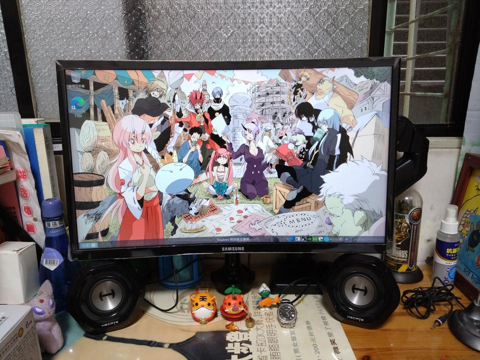

新鍵盤與螢幕支架
最近因為玩遊戲玩一玩螢幕突然開始閃，然後進階成幾乎整片變成粉紅色，完全就是死去無法繼續使用的狀態，所以只好來買新的電腦螢幕。 之前本來就有在觀望螢幕支架跟想再新竹租屋處也買一隻 65% 鍵盤，就趁這次機會也都買下去了(雖然有稍微掙扎一下XD)。
螢幕支架跟鍵盤是都拿到了，倒是主要的電腦螢幕因為想要的有兩個 HTML 孔的螢幕要等店家調貨，所以現在還在調的路上。 關於螢幕支架，其中一個買的原因也是因為在將螢幕換成舊螢幕或是要換螢幕線的時候真的是有夠難用，常常底座都會卡到其他東西。 用螢幕支架的一個好處就是可以不受限於原本螢幕附的底座，可以比較方便的去移動螢幕的位置。 在沒有升降桌的情況下也可以作為簡單的替代方案，可以將螢幕調高站著用搖桿玩遊戲或是看影片。
不過一個缺點是，要將螢幕條到中間就比較麻煩。我買回來裝的時候就條蠻久的，螢幕支架的底座就不能擺在中間而是要往左右調整。 同時因為我是選擇用夾的，桌子也要夠厚、夠深才行。像我租屋處的桌子側邊可以夾的深度就不夠，所以就無法裝螢幕支架。
裝完螢幕支架後可以自由的調整螢幕位置還蠻開心的XD。可惜的是舊螢幕後面那根底座支架拆不掉，所以螢幕沒辦法降很低。

Figure 1: 一般情況

Figure 2: 站著的情況
至於另一位主角新鍵盤，自從買了第一把 65% 鍵盤後，就偶爾會看一下有啥其他的 65% 鍵盤。 加上現在土城家裡跟公司都是 65% 鍵盤了，所以也有在想是不是也該在新竹租屋處也放一把 65% 鍵盤。 原本也還在猶豫，因為現在新竹用的鍵盤也還算好用，大概從大學時就一直用到現在。 也算是跟著其他要買的東西以及一時的衝動就買了XD (雖然是在不同地方買的)。
這次買的是 keychron K6 pro 65% 茶軸的鍵盤，同時加購了有中文的鍵帽。 會買這家的鍵盤主要是之前有在同學家看到有 keychron 的鍵盤，之後就有在想如果以後還有要買鍵盤的話可以看看這家的。 而茶軸主要是因為之前有因為不想太大聲所以買了紅軸以及靜音紅軸，這兩種軸主要是從軸體本身去減少按鍵的聲音。 之前也有看網路上別人講解鍵盤聲音主要來自兩處，一個是軸按下去的聲音，一個是按鍵按到底敲擊鍵盤底部的聲音。 所以就想說這次就換個角度，改用觸發壓力比紅軸大，軸體本身也不會像常聽說的青軸那麼吵的茶軸。觸發壓力大就表示按鍵按到底要比較大力，所以同樣的按法，敲擊按鍵的聲音就會比較小聲。 至於為啥是 K6 pro 呢，其實同學也有推薦說如果沒有要帶來帶去的，可以買比較重但質感比較好的 Q2。 不過我是有比較想買有支援無線或藍芽的鍵盤，這樣如果要在家用公司筆電就不用另外接一個鍵盤了。 而 Q2 是只有支援有線的連接方式，所以就改買有支援而且也算不錯的 K6 pro，價格也比較便宜就是了XD。
買來後第一件事依舊是看說明書與先充電。然後說明書看一看發現這鍵盤好像沒有 delete 鍵可以用，雖然在終端機跟 emacs, vim 可以用別的鍵替代就是了。在不濟這隻鍵盤也支援自定義按鍵，應該有辦法解決才對? 在開封確認內容物的過程中，意外發現ㄇ鍵沒擺正，以及簡易說明書頗髒的。買了三隻鍵盤加上看別人評論鍵盤，我也進化到會注意到這些東西的人了嗎XD。

Figure 3: 沒擺正的ㄇ(拍的頗爛)

Figure 4: 髒髒的簡易說明書
在充電前，其實我有先換了幾顆按鍵。因為它預設是 macOS 的按鍵配置，所以像 Windows 鍵和 Alt 鍵的部份，它是先裝 Cmd 以及 Option 鍵的。 雖然我現在在新竹用的作業系統既不是 Windows 也不是 macOS，不過畢竟還是比較習慣 Windows 的按鍵配置，所以還是換成了 Windows 鍵以及 Alt 鍵。

Figure 5: 原本的按鍵配置

Figure 6: 被拔掉的 Cmd 鍵與 Option 鍵

Figure 7: Windows 按鍵配置
充完電隔天就是要來將鍵盤換成新的鍵盤。從 100% 鍵盤換成 65% 鍵盤，桌子瞬間感覺變大了許多XD

Figure 8: 原本的鍵盤

Figure 9: 新的鍵盤
同時也要來換一下中文鍵帽。雖然現在有在新竹的電腦嘗試用用看拼音輸入法，所以暫時也用不到注音就是了。不過身為僅存使用注音的台灣人，可以的話當然還是想在鍵盤上看到注音啊。 說到這個，現在打拼音真的是超級卡。因為腦中會先想到注音，然後在轉成拼音，再接著要找到對應的英文。尤其是ㄗㄘㄙ、ㄓㄔㄕ、ㄑㄒ，這幾個拼音超不直覺，要打 z c s, zh ch sh, q x。另外就是一些像 ㄨㄢ、ㄩㄣ 等，在有沒有聲母的情況打法不一樣，wuan uan, yuen, uen，都會卡卡的。 看來要習慣拼音輸入法還得要一陣子。這篇文章也是慢慢用拼音打出來的。 話說回來，在換鍵帽的過程中，我發現英文鍵帽跟中文鍵帽高度好像有點差。而且不知道是不是我裝的問題，總覺得裝完後整個打字區高低起伏不一XD。 嘛，總之應該會先就這樣用，等注音鍵帽壞掉才有機會在換回英文鍵帽吧(雖然不知道是何年何月就是了)。

Figure 10: 拔掉英文鍵帽

Figure 11: 換成中文鍵帽

Figure 12: 高低有落差的兩種鍵帽
好久沒打這麼長的文章了，打了兩天才打完。因為用拼音卡卡的關係，所以打的時候常常思路會被要想怎麼打某個字打斷。 下次有要再打比較長的文章是不是還是該換回習慣的注音才對XD 目前這把新鍵盤打了兩天，跟之前的兩把比起來是沒說到特別有感覺差很多，可能要再打久一點有差吧。 不過三把打起來都還算不錯。 目前只有體感聲音大小大概是 Keyboard Paradise 巨浪靜音紅軸 < Keychron K6 Pro 茶軸 < Royal Kludge RK68 紅軸。 所以要小聲點目前來看還是要先選靜音紅軸了